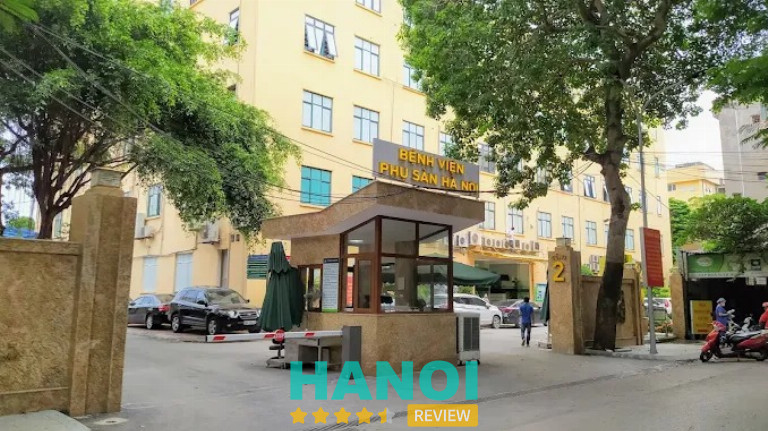
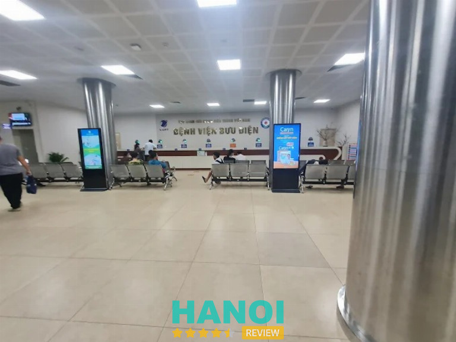
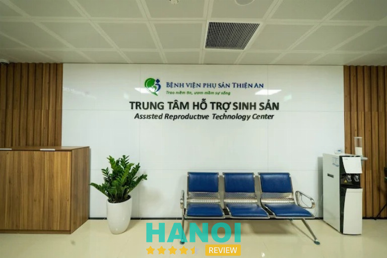
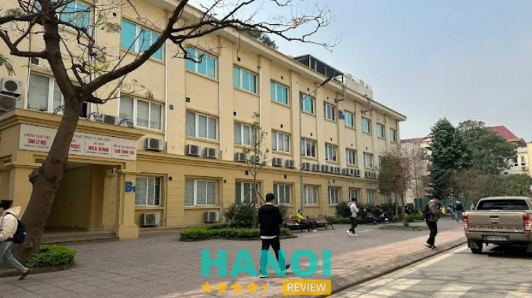
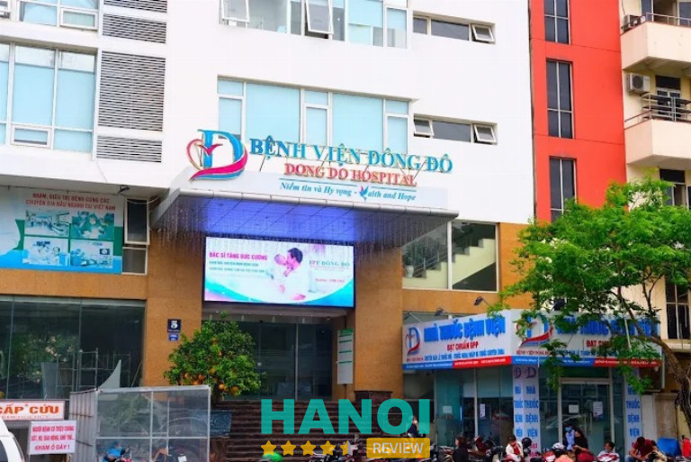

10 Địa chỉ khám vô sinh hiếm muộn ở Hà Nội uy tín
Tìm kiếm địa chỉ khám vô sinh hiếm muộn tại Hà Nội là bước khởi đầu quan trọng trên hành trình tìm kiếm con yêu của nhiều cặp vợ chồng. Thủ đô hiện sở hữu đội ngũ chuyên gia đầu ngành cùng hệ thống phòng lab đạt chuẩn quốc tế. Tuy nhiên, việc lựa chọn cơ sở uy tín, tỷ lệ thành công cao và chi phí hợp lý không hề dễ dàng.
Top 10 Phòng khám vô sinh hiếm muộn tại Hà Nội thăm khám và tư vấn chuyên sâu
Hà Nội là trung tâm y tế lớn nhất cả nước, nơi quy tụ đội ngũ bác sĩ dày dạn kinh nghiệm cùng công nghệ hỗ trợ sinh sản tiên tiến. Việc thực hiện khám vô sinh hiếm muộn ở Hà Nội tại các đơn vị đầu ngành đảm bảo tính chính xác trong chẩn đoán và áp dụng phác đồ điều trị cá nhân hóa tối ưu.
Bệnh viện Phụ sản Trung ương – P. Cửa Nam
Bệnh viện Phụ sản Trung ương, hay còn gọi là Sản C, là cơ sở đầu ngành chuyên sâu về điều trị hiếm muộn và vô sinh tại Việt Nam. Dịch vụ khám tại Trung tâm Hỗ trợ sinh sản Quốc gia tập trung vào chẩn đoán nguyên nhân và đưa ra phác đồ điều trị cá thể hóa cho các cặp đôi. Quá trình thăm khám bao gồm việc kiểm tra sức khỏe sinh sản tổng thể từ cả hai phía vợ và chồng để xác định tình trạng bệnh lý.
Quy trình khám hiếm muộn ở Hà Nội tại đơn vị này bao gồm các hạng mục cụ thể:
- Đối với người vợ: Khám lâm sàng phụ khoa, xét nghiệm các chỉ số hormone sinh sản như AMH, FSH, LH, siêu âm tử cung buồng trứng và chụp tử cung vòi trứng (HSG).
- Đối với người chồng: Khám nam khoa và thực hiện xét nghiệm tinh dịch đồ để phân tích chất lượng tinh trùng, kết hợp xét nghiệm máu khi cần thiết.
- Các kỹ thuật điều trị: Áp dụng bơm tinh trùng vào buồng tử cung (IUI), thụ tinh trong ống nghiệm (IVF) với kỹ thuật ICSI, nuôi cấy và trữ lạnh phôi.
- Chi phí và thời gian: Chi phí khám ban đầu dao động từ 2.000.000 đến 10.000.000 VNĐ. Một số xét nghiệm của vợ cần thực hiện vào các ngày cụ thể của chu kỳ kinh nguyệt.
- Lưu ý chuẩn bị: Người vợ nên đi khám sau khi sạch kinh 3-5 ngày. Người chồng cần kiêng xuất tinh từ 2-7 ngày. Cặp đôi cần mang theo giấy tờ tùy thân và các kết quả khám cũ.
Trung tâm ghi nhận tỷ lệ thành công của kỹ thuật IVF đạt mức trên 60%. Việc thăm khám giúp xác định chính xác các trường hợp tắc vòi trứng hoặc tinh trùng yếu để có phương án can thiệp kịp thời.
Thông tin liên hệ:
- Địa chỉ: Số 1 Triệu Quốc Đạt, P. Cửa Nam, Hà Nội
- Điện thoại: 1900 1029
- Website: benhvienphusantrunguong.org.vn
Bệnh viện Phụ Sản Hà Nội – P. Hai Bà Trưng
Trong danh sách địa chỉ khám vô sinh hiếm muộn ở Hà Nội, Bệnh viện Phụ sản Hà Nội thường được nhắc đến nhờ hệ thống chuyên khoa sâu về sản phụ khoa và hỗ trợ sinh sản. Hoạt động thăm khám và điều trị vô sinh hiếm muộn tại đây được thực hiện chủ yếu tại Khoa Hỗ trợ sinh sản và Nam học. Đây là khoa chuyên triển khai nhiều kỹ thuật hỗ trợ sinh sản hiện đại, tiếp nhận số lượng lớn trường hợp mỗi năm.

Khoa Hỗ trợ sinh sản và Nam học thực hiện các phương pháp điều trị từ cơ bản đến chuyên sâu. Tỷ lệ thành công của thụ tinh trong ống nghiệm (IVF) được ghi nhận khoảng 72%. Mỗi năm, khoa tiếp nhận hơn 30.000 lượt khám cùng hàng nghìn ca can thiệp IUI và IVF. Đội ngũ chuyên môn gồm nhiều bác sĩ nhiều năm kinh nghiệm như BS.CKII Phạm Thúy Nga – Trưởng khoa và ThS.BS Nguyễn Thị Mỹ Dung – Phó Trưởng khoa.
Một số điểm cần lưu ý khi đến khám:
- Vợ nên đi khám vào ngày thứ 2 hoặc thứ 3 của chu kỳ kinh nguyệt để thực hiện xét nghiệm nội tiết.
- Trường hợp chụp tử cung vòi trứng thường thực hiện sau khi sạch kinh khoảng 3–5 ngày và chưa quan hệ tình dục.
- Chồng nên kiêng quan hệ tình dục từ 2 đến 7 ngày trước khi xét nghiệm tinh dịch đồ.
- Hồ sơ nên mang theo gồm CMND/CCCD, thẻ BHYT và các kết quả khám sản phụ khoa trước đó nếu đã từng kiểm tra.
Chi phí khám ban đầu tại bệnh viện khoảng 250.000 VNĐ đối với dịch vụ khám sản phụ khoa. Tùy theo chỉ định, các xét nghiệm chẩn đoán tổng quát có thể dao động từ vài triệu đồng. Những kỹ thuật hỗ trợ sinh sản chuyên sâu như IUI thường từ 4.000.000 VNĐ, còn IVF có thể dao động khoảng 70.000.000 – 120.000.000 VNĐ cho một chu kỳ điều trị.
Nhờ quy mô chuyên khoa và tần suất điều trị lớn, nơi đây được nhiều người tìm kiếm khi cần địa chỉ khám vô sinh hiếm muộn ở Hà Nội.
Thông tin liên hệ:
- Địa chỉ: Số 38 Cảm Hội, P. Hai Bà Trưng, Hà Nội
- Điện thoại: 024 6278 5746
- Website: Bacsiphusanhanoi.vn
Bệnh viện Nam học và Hiếm muộn Hà Nội (AFH) – P. Hoàng Mai
Bệnh viện Nam học và Hiếm muộn Hà Nội (AF HANOI) là một nơi khám vô sinh hiếm muộn ở Hà Nội được nhiều cặp vợ chồng tìm hiểu khi cần kiểm tra và điều trị các vấn đề về sức khỏe sinh sản. Đây là cơ sở y tế chuyên khoa sâu tại miền Bắc tập trung vào lĩnh vực nam học, hiếm muộn và hỗ trợ sinh sản cho cả nam và nữ. Bệnh viện hoạt động tất cả các ngày trong tuần, bao gồm cả ngày nghỉ, tạo điều kiện cho người bệnh sắp xếp thời gian thăm khám.
Đơn vị được đánh giá cao khi đạt chuẩn chất lượng quốc tế RTAC trong lĩnh vực hỗ trợ sinh sản. Hệ thống trang thiết bị phục vụ chẩn đoán và điều trị được đầu tư nhằm đáp ứng các kỹ thuật chuyên sâu. Cơ sở này triển khai nhiều phương pháp điều trị khác nhau dành cho các trường hợp hiếm muộn với các dịch vụ chính sau:
- Khám và tư vấn: chẩn đoán nguyên nhân vô sinh ở cả vợ và chồng thông qua các xét nghiệm chuyên sâu và siêu âm.
- Thụ tinh trong ống nghiệm (IVF): tỷ lệ thành công khi chuyển phôi đông lạnh khoảng 63%, đồng thời triển khai chương trình “Bảo hành IVF” nhằm hỗ trợ chi phí.
- Thụ tinh nhân tạo (IUI): phương pháp bơm tinh trùng vào buồng tử cung với tỷ lệ thành công trung bình khoảng 31%.
- Nam khoa và y học giới tính: điều trị các bệnh lý nam khoa, trữ tinh trùng mẫu nhỏ và cung cấp các liệu pháp hỗ trợ dành cho cộng đồng LGBT.
Bên cạnh các dịch vụ điều trị, cơ sở vật chất tại bệnh viện được nhận xét hiện đại và khang trang. Khu vực tiếp đón, sảnh chờ và các phòng chức năng được bố trí rõ ràng. Đội ngũ bác sĩ và nhân viên y tế được nhiều người bệnh đánh giá nhiệt tình và chu đáo ngay từ khâu tiếp đón tại sảnh và bảo vệ.
Với hệ thống dịch vụ hỗ trợ sinh sản chuyên sâu cùng thời gian hoạt động linh hoạt, Bệnh viện Nam học và Hiếm muộn Hà Nội được nhiều người nhắc đến khi tìm nơi khám vô sinh hiếm muộn ở Hà Nội.
Thông tin liên hệ:
- Địa chỉ: 431 Tam Trinh (Lô 07- 3A Cụm Công Nghiệp Hoàng Mai), P. Hoàng Mai, Hà Nội
- Điện thoại: 024 3634 3636
- Email: marketing.afhanoi@gmail.com
- Website: afhanoi.com
- Facebook: fb.com/afhanoi
Bệnh viện Đa khoa Tâm Anh – P. Bồ Đề
Bệnh viện Đa khoa Tâm Anh (IVF Tâm Anh) được nhiều người nhắc đến khi tìm địa chỉ khám hiếm muộn ở Hà Nội. Trung tâm hỗ trợ sinh sản của bệnh viện ghi nhận tỷ lệ thụ tinh trong ống nghiệm (IVF) thành công trung bình khoảng 78,7% theo số liệu năm 2024. Nhiều trường hợp hiếm muộn phức tạp như người lớn tuổi, dự trữ buồng trứng thấp hoặc vô tinh được tiếp nhận điều trị tại đây.
Trung tâm áp dụng mô hình “Kiềng 3 chân” kết hợp điều trị hiếm muộn nam, hiếm muộn nữ và hệ thống phòng Labo chuyên sâu. Phương pháp “liệu pháp cặp đôi” tập trung đánh giá đồng thời sức khỏe sinh sản của cả hai vợ chồng nhằm tối ưu hóa quá trình điều trị. Trung tâm Hỗ trợ sinh sản tại Hà Nội là đơn vị đầu tiên ở miền Bắc đạt chứng nhận RTAC, tiêu chuẩn quản lý chất lượng trong hỗ trợ sinh sản do Úc công nhận.
Đội ngũ chuyên gia tại IVF Tâm Anh gồm nhiều bác sĩ và chuyên gia phôi học nhiều kinh nghiệm. Trong đó có ThS.BS Giang Huỳnh Như – Giám đốc Trung tâm IVFTA-HCMC cùng các bác sĩ và kỹ thuật viên phôi học. Bệnh viện đầu tư phòng Lab đạt chuẩn quốc tế, ứng dụng các kỹ thuật hỗ trợ sinh sản hiện đại.
Các kỹ thuật và điều kiện điều trị nổi bật gồm:
- Vi phẫu tìm tinh trùng Micro-TESE
- Nuôi cấy phôi ứng dụng trí tuệ nhân tạo (AI)
- Sàng lọc và đánh giá phôi trong phòng Lab chuẩn quốc tế
- Khu điều trị hiếm muộn cao cấp tại TP.HCM rộng gần 1.000m² với quy trình khép kín
Quy trình thăm khám thường bao gồm khám lâm sàng, siêu âm, xét nghiệm máu và kiểm tra hormone đối với nữ, xét nghiệm tinh dịch đồ đối với nam. Phụ nữ thường được khuyến nghị đi khám vào ngày thứ 2 hoặc thứ 3 của chu kỳ kinh nguyệt để đánh giá nội tiết. Chi phí khám ban đầu dao động khoảng 2.000.000 – 10.000.000 VNĐ tùy danh mục xét nghiệm.
Thông tin liên hệ:
- Địa chỉ: 108 Phố Hoàng Như Tiếp, P. Bồ Đề, Hà Nội
- Địa chỉ: 024 7106 6858
- Email: cskh@tamanhhospital.vn
- Website: tamanhhospital.vn
- Facebook: fb.com/tamanhhospital.vn
Bệnh viện Đa Khoa Bưu Điện – P. Phương Liệt
Bệnh viện Bưu điện được nhiều người nhắc đến như một địa chỉ khám vô sinh hiếm muộn ở Hà Nội với chuyên khoa hỗ trợ sinh sản hoạt động nhiều năm. Trung tâm Hỗ trợ sinh sản IVF Bưu điện triển khai các kỹ thuật thăm khám và điều trị dành cho các trường hợp khó có con.
Hoạt động điều trị tập trung vào việc đánh giá nguyên nhân hiếm muộn, áp dụng kỹ thuật hỗ trợ sinh sản phù hợp và theo dõi tiến trình điều trị theo từng giai đoạn.

Trung tâm Hỗ trợ sinh sản của Bệnh viện Bưu điện áp dụng nhiều kỹ thuật hiện đại trong lĩnh vực hỗ trợ sinh sản. Thụ tinh trong ống nghiệm IVF và bơm tinh trùng vào buồng tử cung IUI được thực hiện thường xuyên trong phác đồ điều trị. Bên cạnh các kỹ thuật can thiệp, hoạt động khám sức khỏe sinh sản và xét nghiệm di truyền cũng được triển khai nhằm hỗ trợ quá trình điều trị vô sinh hiếm muộn.
Các dịch vụ chuyên sâu tại IVF Bưu điện gồm:
- Khám và tư vấn sức khỏe sinh sản
- Thực hiện thụ tinh trong ống nghiệm IVF
- Bơm tinh trùng vào buồng tử cung IUI
- Xét nghiệm di truyền
- Lưu trữ tế bào gốc
Người bệnh có thể liên hệ tổng đài 18006090 để đăng ký lịch khám và nhận hướng dẫn từ bộ phận tư vấn. Bệnh viện cũng thường tổ chức các Tuần lễ khám và tư vấn miễn phí dành cho vô sinh hiếm muộn vào dịp đầu năm, thường diễn ra vào tháng 2. Các chương trình hỗ trợ chi phí và lịch tổ chức sự kiện được cập nhật trên trang chính thức của Bệnh viện Bưu điện. Đây là kênh được nhiều cặp vợ chồng theo dõi để nắm các hoạt động liên quan đến hỗ trợ sinh sản.
Thông tin liên hệ:
- Địa chỉ: Số 49 phố Trần Điền, P. Phương Liệt, Hà Nội
- Điện thoại: 1800 6090
- Email: info@benhvienbuudien.vn
- Website: buudienhospital.vn
Bệnh viện Đa khoa Hồng Ngọc – P. Ba Đình
Trung tâm IVF Hồng Ngọc thuộc Bệnh viện Đa khoa Hồng Ngọc được nhiều người nhắc đến khi tìm địa chỉ khám vô sinh hiếm muộn ở Hà Nội. Đơn vị này tập trung vào các kỹ thuật hỗ trợ sinh sản hiện đại, phục vụ nhu cầu thăm khám và điều trị cho các cặp vợ chồng gặp khó khăn trong việc sinh con. Hoạt động chuyên môn được triển khai với sự tham gia của nhiều bác sĩ trong lĩnh vực sản phụ khoa và hỗ trợ sinh sản.
Trung tâm có sự dẫn dắt của PGS.BS Ivan Reich, chuyên gia hỗ trợ sinh sản đến từ châu Âu với hơn 40 năm kinh nghiệm. Bên cạnh đó còn có các bác sĩ như BS. Phạm Thị Thùy Dương và BS. Nguyễn Bình Dương tham gia thăm khám và điều trị. Quy trình kiểm tra thường được thực hiện cho cả vợ và chồng nhằm đánh giá toàn diện các yếu tố liên quan đến khả năng sinh sản.
Các bước thăm khám thường bao gồm:
- Khám lâm sàng để bác sĩ tư vấn và kiểm tra tiền sử bệnh lý.
- Xét nghiệm cho vợ gồm siêu âm tử cung, buồng trứng và xét nghiệm nội tiết tố như AMH nhằm đánh giá dự trữ buồng trứng.
- Xét nghiệm cho chồng bằng tinh dịch đồ để đánh giá số lượng và chất lượng tinh trùng.
Chi phí thăm khám và điều trị được công bố ở nhiều mức khác nhau tùy từng dịch vụ. Khám sản phụ khoa thường dao động khoảng 400.000 – 600.000 VNĐ. Mini IVF khoảng 30 – 35 triệu VNĐ, trong khi IVF tiêu chuẩn có thể từ 60 – 100 triệu VNĐ tùy liệu trình và tình trạng cụ thể.
Hệ thống phòng Lab được đầu tư theo tiêu chuẩn quốc tế, đồng thời áp dụng mô hình chăm sóc 1:1 với bác sĩ theo dõi xuyên suốt quá trình điều trị. Trung tâm cũng tổ chức các hội thảo tư vấn và một số chương trình hỗ trợ xét nghiệm ban đầu cho khách hàng mới.
Thông tin liên hệ:
- Địa chỉ: Số 55 Phố Yên Ninh, P. Ba Đình, Hà Nội
- Điện thoại: 024 3927 5568
- Email: info@hongngochospital.vn
- Website: hongngochospital.vn
- Facebook: fb.com/BenhvienHongNgoc
Bệnh viện Phụ sản Thiện An – Tây Hồ
Bệnh viện Phụ sản Thiện An triển khai dịch vụ khám, tư vấn và điều trị vô sinh – hiếm muộn dành cho các cặp vợ chồng gặp khó khăn trong việc sinh con. Hoạt động điều trị được thực hiện tại Trung tâm Hỗ trợ sinh sản của bệnh viện, nơi tập trung đội ngũ bác sĩ chuyên khoa sản và hỗ trợ sinh sản với nhiều năm kinh nghiệm trong lĩnh vực điều trị hiếm muộn.

Trong đó có GS.TS.BS Nguyễn Viết Tiến, chuyên gia đầu ngành về sản phụ khoa và hỗ trợ sinh sản. Với kinh nghiệm hơn 40 năm trong lĩnh vực này, chuyên gia tham gia thăm khám, tư vấn và xây dựng phác đồ điều trị phù hợp cho từng trường hợp. Trung tâm tập trung vào việc đánh giá nguyên nhân vô sinh ở cả nam và nữ nhằm lựa chọn phương pháp điều trị thích hợp.
Các kỹ thuật hỗ trợ sinh sản đang được triển khai tại bệnh viện gồm:
- Bơm tinh trùng vào buồng tử cung (IUI)
- Thụ tinh trong ống nghiệm (IVF)
- Hệ thống phòng LAB vô trùng đạt chuẩn quốc tế phục vụ quá trình nuôi cấy phôi
- Các xét nghiệm và kiểm tra cần thiết để đánh giá sức khỏe sinh sản của vợ và chồng
Quy trình thăm khám được thực hiện theo từng bước nhằm đánh giá toàn diện tình trạng sinh sản của cả hai vợ chồng. Sau khi có kết quả thăm khám và xét nghiệm, bác sĩ sẽ đưa ra phương án điều trị phù hợp với từng trường hợp cụ thể.
Bệnh viện Phụ sản Thiện An duy trì hoạt động khám và điều trị vô sinh – hiếm muộn với các kỹ thuật hỗ trợ sinh sản hiện đại, kết hợp đội ngũ chuyên gia nhiều kinh nghiệm trong lĩnh vực sản phụ khoa và hỗ trợ sinh sản.
Thông tin liên hệ:
- Địa chỉ: 27 Ngõ 603 Lạc Long Quân, Tây Hồ, Hà Nội
- Điện thoại: 1900 633 081
- Email: contact@phusanthienan.com
- Website: phusanthienan.com
- Facebook: fb.com/phusanthienan
Bệnh viện Đại học Y Hà Nội – P. Kim Liên
Trung tâm Hỗ trợ sinh sản và Công nghệ Mô ghép (IVF ĐHYHN) thuộc Bệnh viện Đại học Y Hà Nội là cơ sở y tế chuyên khám và điều trị vô sinh hiếm muộn tại Hà Nội. Trung tâm triển khai nhiều kỹ thuật hỗ trợ sinh sản hiện đại, phục vụ các trường hợp hiếm muộn ở cả nam và nữ. Tỷ lệ có thai trong điều trị hỗ trợ sinh sản đạt gần 60%, cho thấy năng lực chuyên môn và hệ thống kỹ thuật được đầu tư bài bản trong lĩnh vực này.

Trung tâm thực hiện nhiều dịch vụ chuyên sâu trong chẩn đoán và điều trị hiếm muộn:
- Khám và tư vấn chẩn đoán nguyên nhân hiếm muộn cho nam và nữ
- Bơm tinh trùng vào buồng tử cung (IUI)
- Thụ tinh trong ống nghiệm (IVF)
- Đông lạnh trứng và bảo quản mô sinh sản
- Hỗ trợ phôi thoát màng trong quá trình nuôi cấy phôi
Đội ngũ chuyên môn gồm các giáo sư, tiến sĩ và bác sĩ đang giảng dạy tại Trường Đại học Y Hà Nội, có kinh nghiệm trong lĩnh vực hỗ trợ sinh sản và công nghệ phôi học.
Chi phí một chu kỳ thụ tinh trong ống nghiệm thường dao động khoảng 60.000.000 – 90.000.000 đồng. Tổng chi phí thăm khám ban đầu cho hai vợ chồng khoảng 8.000.000 – 30.000.000 đồng, tùy số lượng xét nghiệm cần thực hiện.
Đối với nữ giới, thời điểm khám phù hợp thường vào ngày thứ 2 đến ngày thứ 4 của chu kỳ kinh nguyệt nhằm hỗ trợ quá trình đánh giá chức năng sinh sản chính xác hơn. Bệnh viện thường tiếp nhận số lượng lớn bệnh nhân mỗi ngày, việc đăng ký lịch khám trước qua hotline hoặc ứng dụng của bệnh viện giúp chủ động thời gian thăm khám.
Thông tin liên hệ:
- Địa chỉ: Nhà A3, Đại Học Y/1 P. Tôn Thất Tùng, Kim Liên, Hà Nội
- Điện thoại: 0975 001 999
- Email: benhviendaihocyhanoi@hmuh.vn
- Website: hmuh.vn
- Facebook: fb.com/HMUHospital
Bệnh viện Đông Đô – Đống Đa
Bệnh viện Đông Đô triển khai chuyên khoa hỗ trợ sinh sản thông qua Trung tâm Hỗ trợ sinh sản Đông Đô IVF Center, phục vụ nhu cầu khám vô sinh hiếm muộn ở Hà Nội với nhiều kỹ thuật hỗ trợ sinh sản hiện đại. Trung tâm tập trung vào các phương pháp từ cơ bản đến chuyên sâu nhằm đánh giá sức khỏe sinh sản của cặp đôi và lựa chọn hướng điều trị phù hợp theo từng trường hợp.
Hệ thống phòng lab và trang thiết bị phục vụ nuôi cấy phôi, thụ tinh và xét nghiệm được đầu tư theo tiêu chuẩn của lĩnh vực hỗ trợ sinh sản.

Các hạng mục thăm khám và điều trị tại trung tâm gồm:
- Khám sức khỏe sinh sản, thăm khám lâm sàng, siêu âm tử cung và buồng trứng, xét nghiệm tinh dịch đồ.
- Bơm tinh trùng vào buồng tử cung (IUI) – phương pháp hỗ trợ sinh sản cơ bản.
- Thụ tinh trong ống nghiệm (IVF) với một số kỹ thuật như Mini IVF, IVM và công nghệ Piezo ICSI hỗ trợ quá trình thụ tinh.
- Nuôi cấy phôi bằng hệ thống tủ nuôi cấy hiện đại, áp dụng công nghệ Timelapse để theo dõi sự phát triển của phôi liên tục.
Chi phí thăm khám và điều trị được xây dựng theo từng dịch vụ cụ thể. Khám ban đầu đôi khi có chương trình miễn phí thăm khám và xét nghiệm cơ bản dành cho các cặp đôi đăng ký lần đầu.
Gói IVF trọn gói khoảng 80.000.000 VNĐ đã bao gồm thuốc điều trị. Các xét nghiệm riêng lẻ như xét nghiệm máu hoặc tinh dịch đồ dao động khoảng 164.000 – 1.100.000 VNĐ tùy loại. Trung tâm được nhiều cặp đôi tìm hiểu khi có nhu cầu khám vô sinh hiếm muộn ở Hà Nội.
Thông tin liên hệ:
- Địa chỉ: Số 5 Xã Đàn, Đống Đa, Hà Nội
- Điện thoại: 1900 1965
- Email: dongdohospital@gmail.com
- Website: benhviendongdo.com.vn
- Facebook: fb.com/benhviendongdoHN
Bệnh viện Bạch Mai – P. Kim Liên
Trung tâm Hỗ trợ sinh sản (IVF Bạch Mai) thuộc Bệnh viện Bạch Mai là địa chỉ chuyên thăm khám và điều trị vô sinh, hiếm muộn cho cả nam và nữ tại Hà Nội. Đơn vị thực hiện các kỹ thuật hỗ trợ sinh sản hiện đại và xét nghiệm chuyên sâu nhằm đánh giá toàn diện tình trạng sức khỏe sinh sản.
Các dịch vụ chính được triển khai tại trung tâm bao gồm:
- Thăm khám chuyên sâu: Tư vấn, khám và đánh giá toàn diện tình trạng vô sinh ở cặp vợ chồng.
- Kỹ thuật hỗ trợ sinh sản: Bơm tinh trùng vào buồng tử cung (IUI), Thụ tinh trong ống nghiệm (IVF), và Tiêm tinh trùng vào bào tương noãn (ICSI).
- Chẩn đoán cận lâm sàng: Siêu âm bơm nước buồng tử cung, xét nghiệm tinh dịch đồ, xét nghiệm di truyền cho các trường hợp không có tinh trùng.
Địa điểm làm việc của trung tâm đặt tại Phòng 205 – Tầng 2, Tòa nhà K2, Bệnh viện Bạch Mai, số 78 Giải Phóng, phường Phương Mai, Đống Đa, Hà Nội. Phụ nữ nên đi khám vào ngày thứ 2 đến ngày thứ 4 của chu kỳ kinh nguyệt để có kết quả xét nghiệm nội tiết tố chính xác nhất. Để giảm thời gian chờ đợi, việc gọi điện đến Tổng đài đặt lịch của Bệnh viện Bạch Mai trước khi đến là cần thiết.
Trung tâm Hỗ trợ sinh sản (IVF Bạch Mai) tập trung vào việc cung cấp các giải pháp y khoa hiện đại trong lĩnh vực hiếm muộn. Các quy trình từ thăm khám, siêu âm bơm nước buồng tử cung đến các xét nghiệm di truyền đều được thực hiện theo tiêu chuẩn chuyên môn.
Việc phối hợp các kỹ thuật IUI, IVF và ICSI giúp đa dạng hóa phương án điều trị cho người bệnh. Mọi quy trình đăng ký và thăm khám đều tuân thủ theo lịch trình và hướng dẫn điều phối chung của Bệnh viện Bạch Mai để tối ưu hiệu quả làm việc.
Thông tin liên hệ:
- Địa chỉ: 78 Giải Phóng, P. Kim Liên, Hà Nội
- Điện thoại: 1900 888 866
- Email: congvandenctxh@gmail.com
- Website: bachmai.gov.vn
- Facebook: fb.com/benhvienbachmai1911
Tiêu chí chọn nơi khám vô sinh hiếm muộn ở Hà Nội
Lựa chọn đúng địa chỉ y tế là bước ngoặt quyết định sự thành công trong hành trình tìm con, giúp tiết kiệm thời gian và đảm bảo an toàn sức khỏe.
- Đội ngũ bác sĩ: Những chuyên gia giàu kinh nghiệm lâm sàng giúp đưa ra nhận định chính xác về tình trạng sức khỏe sinh sản của từng cặp vợ chồng.
- Trang thiết bị hiện đại: Hệ thống phòng Lab đạt chuẩn quốc tế cùng máy móc siêu âm, xét nghiệm hiện đại hỗ trợ tối đa cho quá trình chẩn đoán bệnh.
- Kỹ thuật tiên tiến: Cơ sở y tế cần làm chủ các kỹ thuật khó như IVF, IUI, ICSI hoặc nuôi cấy phôi ngày năm để tăng tỷ lệ đậu thai.
- Quy trình chuyên nghiệp: Thủ tục thăm khám nhanh gọn, bảo mật thông tin khách hàng và tư vấn tận tâm giúp bệnh nhân giảm bớt áp lực tâm lý nặng nề.
- Chi phí minh bạch: Các khoản phí xét nghiệm và điều trị cần được niêm yết rõ ràng, giúp các gia đình chủ động chuẩn bị tài chính một cách tốt nhất.
- Tỷ lệ thành công cao: Những đơn vị có bề dày thành tích trong việc hỗ trợ các ca khó, lâu năm là minh chứng cho chất lượng dịch vụ y tế.
- Vị trí và hạ tầng: Không gian thăm khám sạch sẽ, tiện nghi và vị trí giao thông thuận lợi giúp việc đi lại tái khám trở nên dễ dàng, thuận tiện.
Việc chủ động đi khám vô sinh hiếm muộn ở Hà Nội chính là chìa khóa vàng mở ra cánh cửa hạnh phúc cho những gia đình đang mong ngóng tiếng cười trẻ thơ. Hãy ưu tiên các bệnh viện có cam kết về tỷ lệ thành công và sở hữu đội ngũ chuyên gia tận tâm. Hy vọng những thông tin trên giúp bạn sớm tìm được địa chỉ tin cậy để bắt đầu hành trình đón con yêu về nhà.
Có thể bạn quan tâm
- 7 Bác sĩ Khám Nam khoa giỏi ở Hà Nội nhiều năm kinh nghiệm
- 5 Địa chỉ khám sàng lọc trước sinh ở Hà Nội uy tín, chất lượng
- 10 Phòng khám nhi tại Hà Nội bác sĩ giỏi, uy tín, chuyên nghiệp
- 10 Bác sĩ khám phụ khoa giỏi ở Hà Nội nhiều năm kinh nghiệm
DOANH NGHIỆP: Đăng tải thông tin MIỄN PHÍ.
Tin đọc nhiều


4 Phòng khám sản phụ khoa tại H. Thạch Thất chuyên nghiệp
Với nhu cầu chăm sóc sức khỏe phụ nữ ngày càng tăng, việc tìm kiếm một phòng khám phụ khoa uy tín ở H. Thạch...

5 Địa chỉ khám Nam khoa tại Q. Hà Đông uy tín, chất lượng
Địa chỉ khám nam khoa ở Hà Đông luôn là mối quan tâm hàng đầu của nam giới khi cần tìm nơi uy tín để...
5 Phòng khám tai mũi họng tại H. Thanh Trì dịch vụ chuyên nghiệp
Trong thời đại hiện nay, bên cạnh việc chọn lựa các bệnh viện lớn, người dân càng có xu hướng tìm đến các Phòng khám...
5 Phòng khám sản phụ khoa tại Q. Nam Từ Liêm uy tín
Phòng khám phụ khoa tại Q. Nam Từ Liêm là địa chỉ mà nhiều chị em tin tưởng khi cần kiểm tra và chăm sóc...

Trở thành người đầu tiên bình luận cho bài viết này!